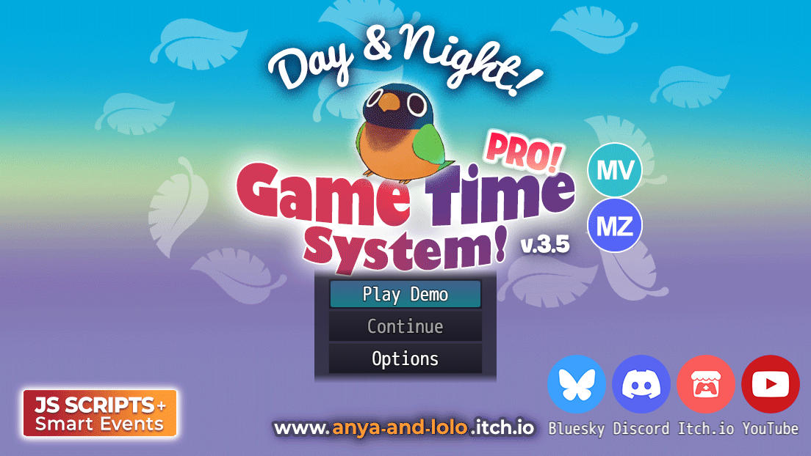

RPG Maker Tutorials
Cozy, beginner-friendly RPG Maker guides you can follow step by step 💛
RPG Maker Basics
Brand new to RPG Maker? Learn the building blocks every game uses, maps, events, variables, switches, common events, transfers, shops, save points and graphics. 💛
Perfect first stop. Clear, beginner-friendly answers grouped by topic, so the step-by-step tutorials make sense.
RPG Maker Day & Night Cycle Tutorial (Beginner)
Create a day & night system and game time in RPG Maker. 💛
RPG Maker Fishing Mini-Game Tutorial (Mid-level)
Build a relaxing, expandable fishing system with random catches and item rewards. 🎣
RPG Maker Relationship System Tutorial (Mid-level)
Track Trust, Friendship and Romance shaped by the player's dialogue choices. 💖
🔒 RPG Maker Day & Night Cycle Pro (Advanced)
Take the system further: world-map time, a picture-based HUD, AM/PM display, smart performance and time-reactive events. 🌙

🔒 Club members only, free to join! Our advanced tutorials are exclusive to the Anya & Lolo Club. Joining costs nothing, and the access links land straight in your inbox 💌
RPG Maker FAQ & Troubleshooting
Quick answers to the questions new RPG Maker devs ask most: versions, eventing, lag, plugins, and the mistakes that trip everyone up.
Which RPG Maker version should I choose?
RPG Maker MZ is the newest and most beginner-friendly; MV is slightly older but has a huge plugin library and community. Both use JavaScript plugins and export to Windows, Mac, mobile, and web. XP, VX Ace, and RPG Maker 2000/2003 are older and cheaper with smaller modern communities. If you're starting fresh, MZ or MV are the easiest picks.
How do I make a day & night cycle?
Track in-game time with a variable in a Parallel Process common event, then change the screen tint as the time value changes. We have a full step-by-step that works in MZ, MV, XP, VX Ace, 2000, and 2003: RPG Maker Day & Night Cycle tutorial.
My game is lagging, how do I fix it?
The most common cause is too many Parallel Process events running every frame. Keep parallel events small and gate them behind a switch or condition so they only run when needed, and move repeated logic into Common Events. For frame-perfect optimization (only updating things when a value actually changes), I explain a full smart system in the Pro version of the Day & Night tutorial.
How do I install a plugin in RPG Maker MZ/MV?
Put the plugin's
.js file in your project's js/plugins folder, open the Plugin Manager, add the plugin, set it to ON, and configure its parameters. Always read the plugin's terms of use.Can I use RPG Maker's built-in (RTP) assets in other engines?
Generally no. Default RPG Maker assets are licensed for use in games made with RPG Maker. Check the specific product's license (EULA) before using them in other engines, including WOLF RPG Editor.
What's the difference between RPG Maker and WOLF RPG Editor?
RPG Maker is a paid, beginner-friendly commercial engine. WOLF RPG Editor (Woditor) is a free, more advanced Japanese engine with deeper customization. If you'd like to try it, we maintain a full English WOLF RPG Editor guide ↗.
What do beginners usually struggle with?
Most new devs run into the same hurdles, the big three are: skipping backups or a test project, using too many Parallel Process events, hard-coding logic or duplicating events instead of reusing Common Events. You can avoid these easily by keeping a small sandbox project, gating your Parallel events, and moving repeatable logic into Common Events so your project stays clean and easy to manage. Brand new? Our Getting Started with RPG Maker page explains all the basics, variables, switches, common events and more, in plain language.
Where To Start?
If you’re new to RPG Maker, we recommend these beginner-friendly tutorials and guides:
1
RPG Maker Day & Night Cycle Tutorial (Beginner)
This tutorial is really easy, and it even comes with a beginner‑friendly video!
2
RPG Maker FAQ
Quick answers to common questions: eventing, plugins, and beginner mistakes.
3
Watch Videos
Some tutorials were made as videos, check out my YouTube channel for more!
Got a tutorial request? Just tell me what you’re after, and I’ll format it into a clean page like this (plus do a video when I have a chance!)